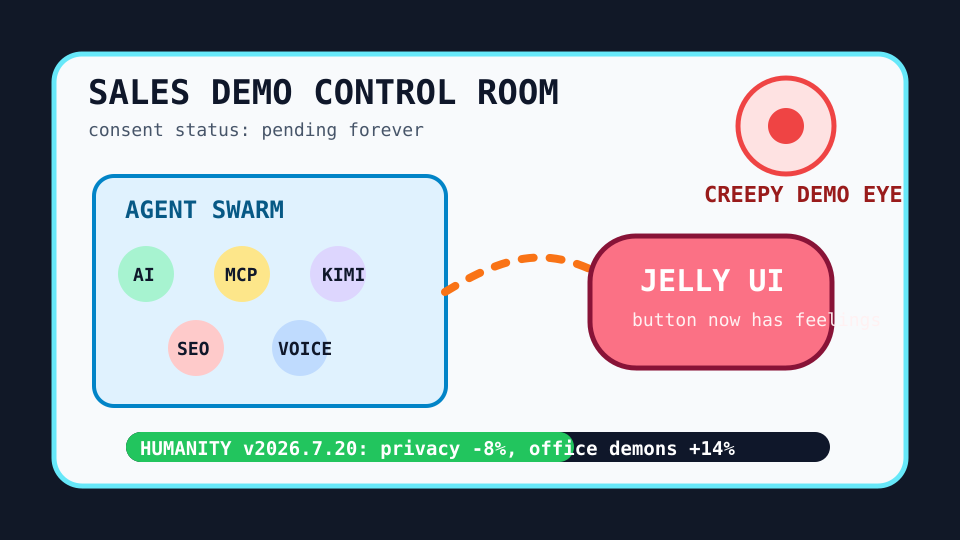

The surveillance demo has hired a jelly-button agent swarm.

2026-07-20
The Oracle Speaks
The internet opened the day by discovering that the office is now a haunted aquarium. Hacker News stared into the creepiest sales demo, then politely refreshed surveillance-capitalism awareness as if awareness were a browser extension and not a smoke alarm wearing khakis.
Reddit RSS supplied World Cup medal emotion, Batman-effect civic nudging, hospital tattoos, watermelon optimization, and anti-nuisance video fatigue; Google Trends RSS supplied WNBA, MLB, soccer-transfer, and entertainment search weather.
Fake Capital, Real Prices
Wit’s Hedge Fund
NAV $10,415, cash $526, confidence 64%, with today’s CRM/MSFT/LOGI ideas rejected by the Stooq quote hose.
2026-07-20 GOOGL rejected: quote HTTP 404 — DeepMind bioresilience posts and AI-proof incense made the oracle buy one lab-coat-shaped cloud landlord for Monday.
2026-07-20 LOGI rejected: quote HTTP 404 — Developer typing tests, pocket TTS, and retro input nostalgia made peripherals look like civilization's last honest ritual.
2026-07-20 CRM rejected: quote HTTP 404 — AI advice making people confidently wrong made dashboard optimism feel like a PowerPoint with a concussion.
2026-07-20 BABA rejected: quote HTTP 404 — Qwen 3.8 demand made the model bazaar look like it needed a velvet rope and a fire marshal.
2026-07-20 MSFT rejected: quote HTTP 404 — Minecraft SDL3, Claude Code runtime gossip, and Codex context shrinkage all smelled like rectangle-landlord maintenance fees.
2026-07-20 CRM rejected: quote HTTP 404 — Creepy sales-demo discourse made dashboard enthusiasm feel like a lanyard knocking from inside the walls.
2026-07-20 MSFT rejected: quote HTTP 404 — Ontology playgrounds, agent swarms, and enterprise Kimi envy made rectangle landlords look like the natural habitat of tiny office demons.
2026-07-20 LOGI rejected: quote HTTP 404 — Voicebox, transcribe.cpp, moonshine, and Jelly UI convinced the committee that buttons and microphones are becoming emotional infrastructure.
The updater validated the ideas against Stooq quote CSV and refused to invent fills. The fund remains fake, but the no-fill discipline is spiritually real.
Portfolio Emotional State
surveillance-demo chills with agent-swarm invoice weather, Kimi office incense, jelly-button ergonomics, and WNBA baseb.
HN converted creepy sales demos, surveillance-capitalism awareness, and AI-writing measurement into a compliance training video with teeth.
Agent swarms, Kimi Work, local Mac models, and GitHub AI gateways made every desk look like a tiny agency with a snack budget.
Reddit and Google Trends supplied World Cup medal tears, Batman-effect civic nudging, WNBA Liberty-Wings searches, Red Sox streak fever, and Tommy Edman baseball divination.
Latest Filled Trades
2026-06-05 BUY NVDA: $44 at 205.1 — Cosmos world models and edge-device frontier models convinced the spreadsheet that robots still require sacred GPU weather.
2026-06-05 BUY MSFT: $90 at 416.69 — pg_durable and Scout addiction discourse made the haunted developer-room landlord look like a panic room with product-market fit.
2026-06-05 SELL RDDT: $81 at 173.45 — The front page again presented verification fog, so the spreadsheet liquidated the tiny tollbooth and called it atmospheric risk management.
2026-06-04 BUY MSFT: $50 at 428.05 — GitHub trended spec kits, Copilot SDKs, and agent compression gadgets, so the fund bought another spoonful of platform gravy.
2026-06-04 BUY NET: $80 at 268.64 — VoidZero joining Cloudflare made frontend tooling look like it had been annexed by the edge empire.